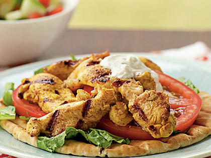

Chicken Shawarma

Ingredients
- 2 lbs bonesless, skinless chicken breasts
- 1/2 tsp cinnamon
- 2 tsp smoked paprika
- 1 tsp kosher salt
- 1/2 tsp turmeric
- 2 tsp crushed black pepper
- 2 tsp powdered cumin
- 4 garlic cloves, chopped
- 1 tsp dried chili flakes
- 4 Tbsp lemon juice
- 1/2 large brown onion, sliced
- 1/2 cup olive oil
Instructions
- Add lemon juice, cinnamon, paprika, salt, turmeric, pepper, cumin, garlic, olive oil, and chili flakes into a large bowl and stir.
- Place chicken breasts into the bowl, coat both sides, and place bowl into fridge for at least 2 hours (but no more than 12).
- Preheat oven to 395F.
- After the chicken is done marinating, add the sliced onion to the bowl and mix everything.
- Add everything to a baking dish and make sure it is not crowded.
- Bake for 40 minutes.
- Take the chicken out and let it rest for 5 minutes.
- Slice chicken evenly and serve with white sauce.